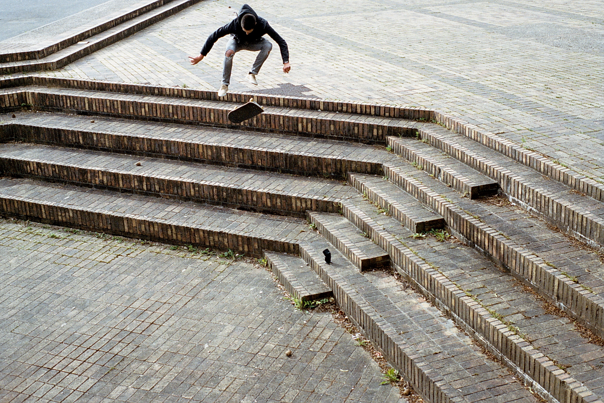
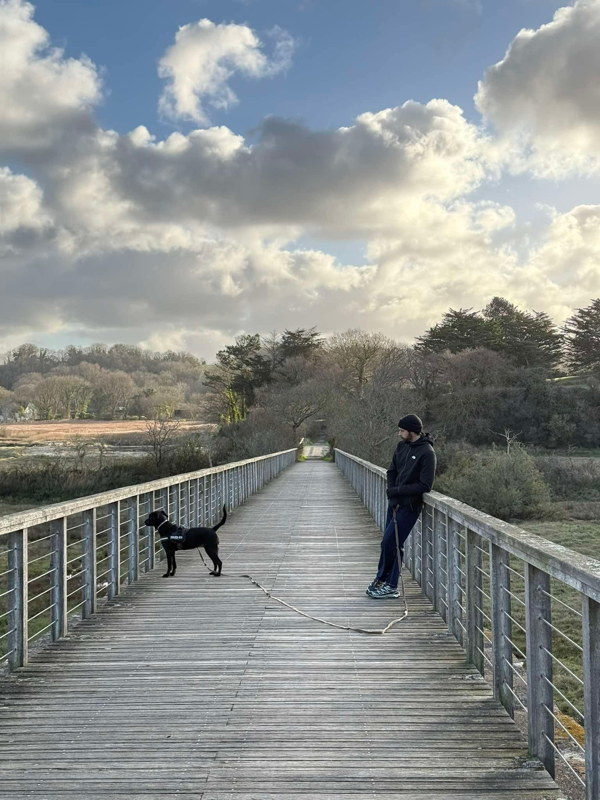
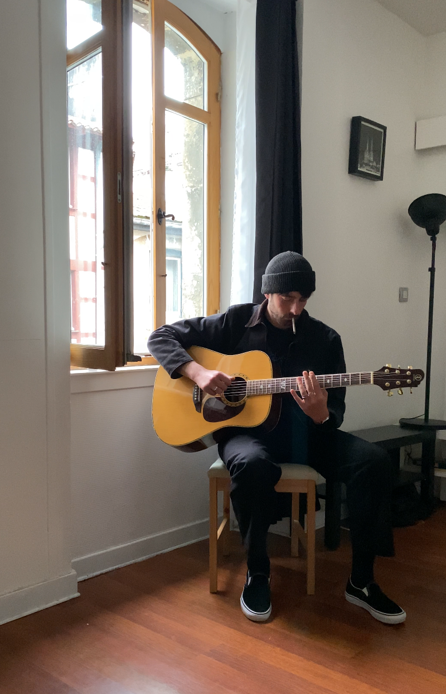
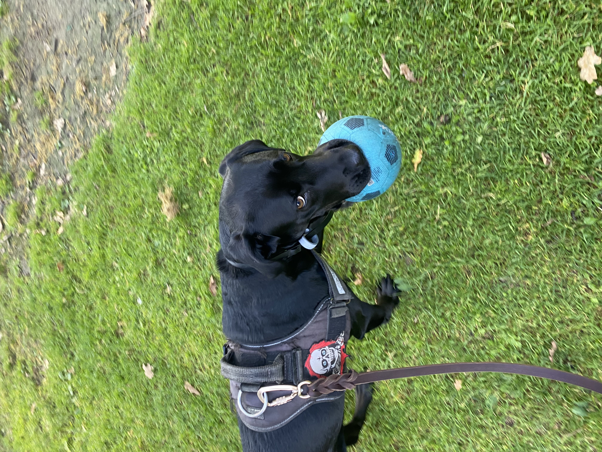

Communication &
direction artistique.

Stratégie, design & impact digital !
Étudiant au Wagon dans le batch #2289, je suis là dans l'objectif de comprendre le code pour apporter une vision esthétique et stratégique du dev.
Ah oui, j'aime le skate, mon chien et la guitare !



#2289